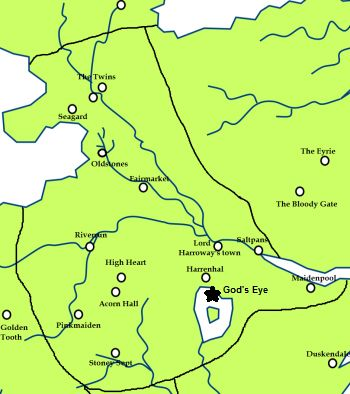

God's Eye
The Gods Eye is a large lake in the Riverlands and marks its southern border. Harrenhal and its town, Harrentown, sit astride its northern shore. At its center is a lone island, the Isle of Faces, the island where the pact between the Children of the Forest and the First Men was created. The water of the Gods Eye is green and warm. Among its feeder streams is the Rippledown Rill.
Map on Next page.
